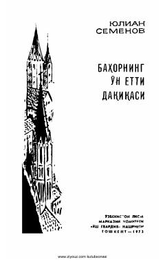

BOIkkinchi jahon urushi davridagi afsonaviy razvedkachi Shtirlitsning maxfiy faoliyati haqidagi roman.
Roman Ikkinchi jahon urushi oxirlarida dushمان ortida maxfiy vazifani bajarayotgan sovet razvedkachisi Maksim Isayev (Shtirlits) haqida hikoya qiladi. Asarda uning fashistlar Germaniyasi rahbarlarining g'arb davlatlari bilan yashirin muzokaralarini fosh etishdagi faoliyati ochib berilgan.